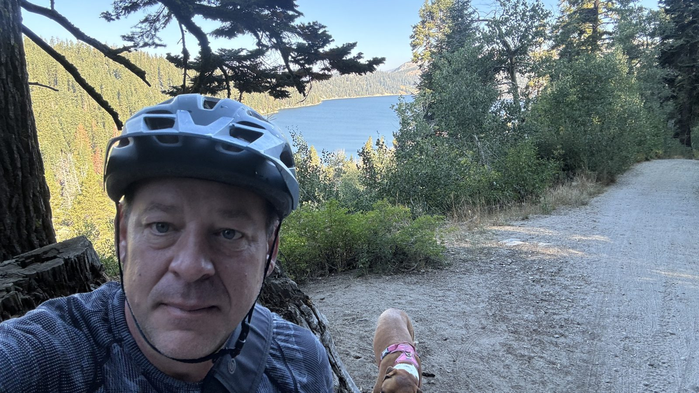

Marlette is one of my favourite rides on the Nevada side of Tahoe. Marley and I go up often, usually early. On this one, September 5, 2024, we started near Spooner Lake just before eight, at almost 7,000 feet.
The ride is North Canyon Road: a wide double track that goes up, and up, and up, through a couple of meadows with the leaves starting to turn. The last bit is steep. We topped out at about 8,100 feet a little before quarter to nine, then dropped down the other side to the lake. Marlette sits up there on its own, with trails all the way around it. I strung up the hammock, Marley went swimming, and I threw the ball for her until it was time to head back.
On the way back over the top we stopped at an overlook. Marley climbed onto an old log and kept an eye on the water while I took pictures.

About 9 miles, 2,100 feet of climbing, and back at Spooner by ten to ten.
As it turned out, it was one of the last times for a while. In spring 2025 the trails closed for two years so the state could rebuild Marlette Dam. It's an earthen dam from 1873, raised a few years later to send water to Virginia City and the Comstock mines, and it had been rated high hazard: a big enough earthquake could bring it down. They drew the lake down twenty feet and put in a new spillway and new outlet pipes. The lake will take years to fill back up. The latest I've read is that the backcountry reopened at the end of September 2026.
What I learned: ride your favourite places while they're open.